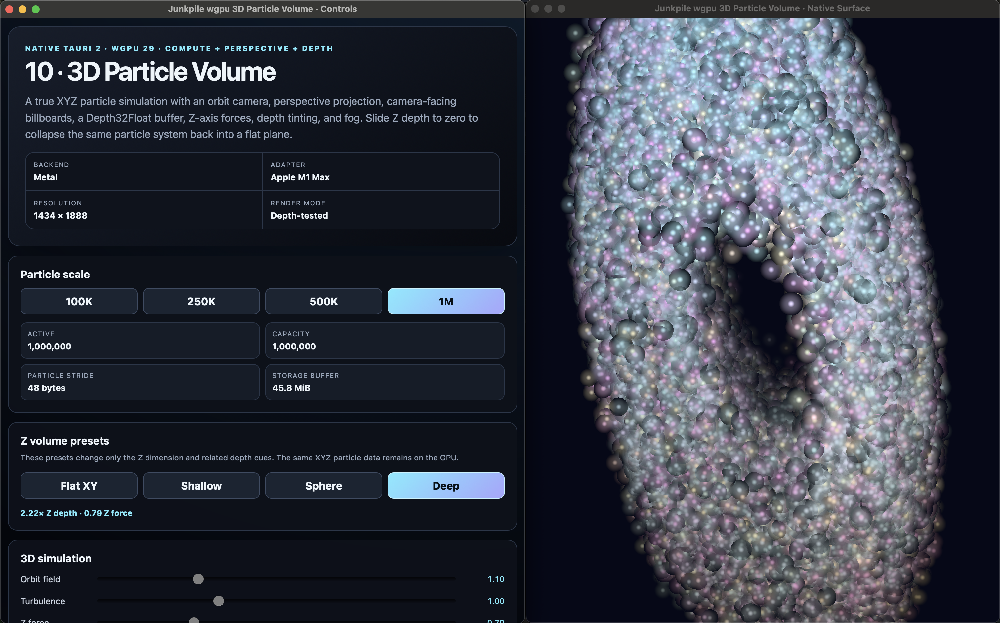

V1
Tauri v1 WebView
Use this track for straightforward p5.js, WebGL, shader, camera, media, MIDI, OSC, and desktop experiments built around the Tauri v1 WebView model.
Explore v1 →Junkpile gives developers working examples for building standalone creative graphics and media applications without having to solve the same rendering, input, recording, routing, and desktop-integration problems from scratch. Pick the example closest to what you need, run it, study how it works, and adapt it into your own tool.

Choose a starting point
You do not need to begin with the lowest-level stack. Junkpile keeps accessible WebView projects and native GPU projects side by side so you can start with the approach that already matches your application, then move lower-level only when you need more control or performance.
Use this track for straightforward p5.js, WebGL, shader, camera, media, MIDI, OSC, and desktop experiments built around the Tauri v1 WebView model.
Explore v1 →Use this track when you want the familiar browser graphics workflow with current Tauri permissions, dialogs, window APIs, file handling, and application packaging.
Explore v2 →Use this track when the application benefits from direct GPU ownership, compute, high-resolution rendering and recording, native media pipelines, or explicit output routing.
Explore wgpu →Understand the pieces
WebView / WebGL or Rust / wgpu
determines who owns the pixels and GPU resources.
files · MIDI · OSC · FFmpeg · NDI · Syphon · Spout
are application integrations whose bridge depends on the renderer and platform.
This separation lets you reason about the application one problem at a time. Tauri defines the desktop shell, the renderer owns the pixels, and media services connect the application to files, controllers, cameras, recorders, and external video systems. A transport is not tied to wgpu simply because the current Junkpile reference happens to use it.
Build an application
Junkpile development layers
Recording and output
The current native examples show how one rendered frame can feed preview, recording, NDI, and platform-specific sharing without making every output part of the render loop. The same transport concepts can be integrated into other application architectures; these are simply Junkpile's current reference implementations.
Find a working starting point
Need video playback, a camera texture, feedback, recording, compositing, high-resolution output, A/V capture, or shader tooling? Start with the closest working project instead of rebuilding that infrastructure before you can work on your own idea.
00-p5-tauri-single-template
A focused foundation for running a p5.js WebGL shader and its HTML controls inside one Tauri v1 WebView.
12-tauri-v2-video-texture-player
A standalone Tauri v2 example for loading local video, decoding it in the WebView, uploading newly presented frames into a WebGL texture, applying GLSL processing, retaining temporal feedback, and exporting PNG snapshots.
20-wgpu-multi-input-compositor
A standalone Tauri 2 + Rust/wgpu convergence example that combines the input systems developed in examples 14–19 into one native render graph.
30-wgpu-high-resolution-record
A native wgpu + Tauri 2 teaching example for recording procedural GPU output at a resolution independent from the visible preview window.
39-wgpu-cross-platform-output-router
A native Tauri 2 + wgpu reference application that renders one authoritative GPU texture and routes it at runtime to multiple independent output sinks:
43-wgpu-av-recorder
Focused native Tauri 2 + wgpu recorder with selectable audio source.
44-wgpu-wgsl-shader-playground
A native Tauri 2 + wgpu counterpart to Junkpile's WebView shader playground workflow.
Working method
Prove the untouched example before debugging your modification.
Know whether JavaScript, Rust, the GPU, or an external worker owns the failing state.
Recording and network/media workers should expose pressure rather than silently block the renderer.
Source presence, static review, runtime validation, and cross-platform verification are different claims.